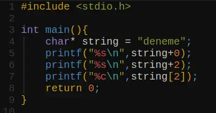
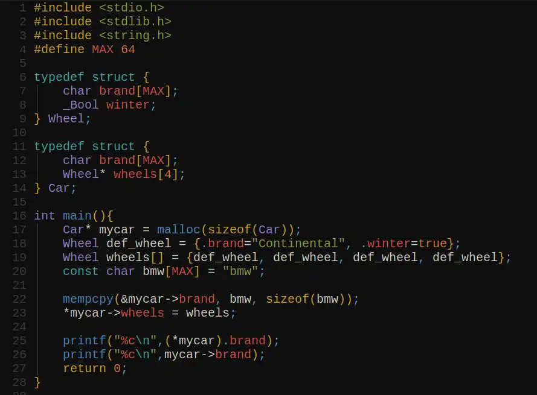
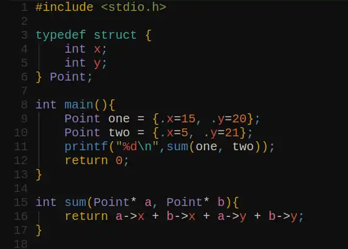
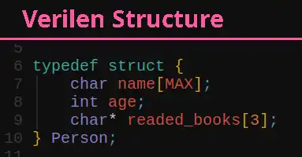
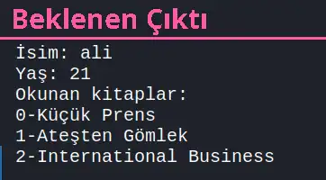

1 Pointer dereference nedir?
2 Bir a değişkenine işaret eden b pointer'ı olsun, Pointer'ın işaret ettiği adres nasıl ekrana yazdırılır?
3 Aşağıdaki kodun sonucu nedir?

4 Koddaki hatayı bulunuz.

5 Koddaki hatayı bulunuz.

6 Verilen structure'ı dinamik bir şekilde depolayın (malloc) ve özelliklerini ekrana yazdırın.

